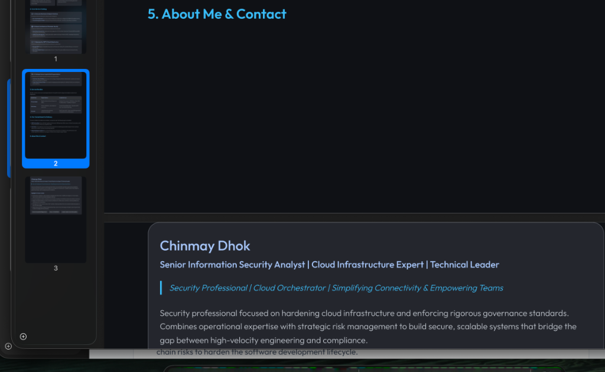

Strategic IT & Cloud Security Playbook
A comprehensive framework and execution strategy designed to harden infrastructure, optimize cloud operations, and scale businesses securely.
A comprehensive framework and execution strategy designed to harden infrastructure, optimize cloud operations, and scale businesses securely.
Modern enterprise infrastructure requires a unified approach to risk mitigation and operational efficiency. My methodology bridges the gap between hardware asset lifecycles, deep security architecture, and technical team scalability to establish a singular point of accountability across the infrastructure layer.
Extensive experience managing vendor ecosystems, zero-trust cloud environments (GCP), GitHub automation, and JIT access models.
A proven track record of scaling operations, enforcing rigorous SLAs, and aligning technical roadmaps with executive business objectives.
Architecting full-lifecycle asset management strategies.
Designing and deploying secure, high-availability connectivity for scaling corporate networks.
Identifying vulnerabilities and engineering the architectural solutions to resolve them.
Building and mentoring the technical talent required to maintain and scale operations.
Outcome-driven implementation frameworks tailored to the specific maturity stage and compliance needs of the organization.
| Maturity Stage | Target Environment | Architectural Focus |
|---|---|---|
| The Launchpad | Rapidly scaling startups setting up new offices. | Hardware Standardization + MDM Policies + Core Networking + Baseline Support Structure. |
| The Fortress | Fintech, Healthtech, and compliance-heavy firms. | NGFW Deployment + Continuous VAPT Cycles + Zero-Trust Cloud Architecture. |
| The Scaler | Large enterprises optimizing operational overhead. | Enterprise SaaS Audits + Cross-functional Team Augmentation + Cloud Cost Optimization. |
To ensure scalable and reliable execution, I operate and enforce the following rigorous standards:

Senior Information Security Analyst | Cloud Infrastructure Expert | Technical Leader
Security Professional | Cloud Orchestrator | Simplifying Connectivity & Empowering Teams
Security professional focused on hardening cloud infrastructure and enforcing rigorous governance standards. Combines operational expertise with strategic risk management to build secure, scalable systems that bridge the gap between high-velocity engineering and compliance.